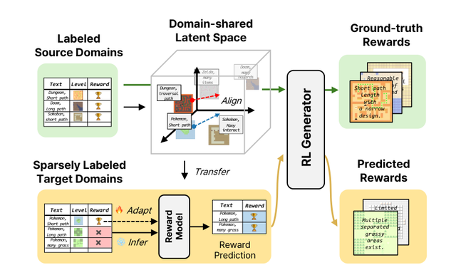

Semantically Structured Instruction Representations for Reward-Free Policy Adaptation


Standard RL policies are coupled to a fixed training objective: adapting to a new goal requires modifying the reward function and retraining from scratch, with no mechanism for receiving human instruction at deployment time. We address this by conditioning the policy on a semantically structured instruction embedding— encoded from a natural-language specification and injected directly into the policy network—so that varying the instruction alone continuously steers behavior at inference time, without any gradient update [1].
The approach extends naturally to the multi-objective setting. Rather than collapsing competing objectives into a scalar, we learn a disentangled representation that encourages each objective dimension to occupy a separable subspace. The policy can then traverse trade-offs across conflicting constraints by interpolating within the instruction space— continuously navigating the behavioral specification without retraining for individual configurations [2].
Resolving Behavioral Underspecification via Tri-Modal Contrastive Grounding

A natural-language prompt is consistent with many distinct output distributions—the same instruction can reasonably describe very different behaviors, leaving the policy underspecified. We address this through a tri-modal contrastive grounding framework that jointly embeds three signal types— natural-language instructions, spatial layout observations, and output trajectories—into a unified metric space. The contrastive objective pulls together representations from different modalities that correspond to the same behavioral target, while pushing apart representations of distinct targets.
The policy accepts any available subset of modalities as input, allowing flexible deployment under partial observability. Combining text with spatial observations resolves much of the ambiguity that language alone cannot eliminate, reducing output variance in our evaluations. Human preference studies confirm that the grounded policy produces behavior that more faithfully matches the specified intent than single-modality baselines [3].
Transferring Instruction Grounding Across Domains Under Sparse Reward Supervision

Thrusts 1–2 establish how a policy can interpret human intent within a controlled domain. ReWARD asks the next question: how can an instruction-conditioned generator adapt when a new target domain provides only limited reward annotations? We learn a domain-shared instruction–level representation and align semantic representation directions across games, so equivalent condition changes point in consistent directions without erasing domain-specific scales or meanings. A reward estimator then predicts rewards for unannotated target-domain instructions, converting sparse language supervision into executable signals for RL training [4].
This reframes cross-domain generalization from simply blending visible level characteristics to transferring reward knowledge across structurally different games. Multiverse complements this direction by showing that shared representations can also support language-conditioned recombination and interpolation across game environments [5]. Together, these results suggest a broader path toward reusable controllability: shared latent structure can support both generative recombination and policy adaptation, while ReWARD brings that structure back into RL as predicted rewards for sparsely supervised domains.